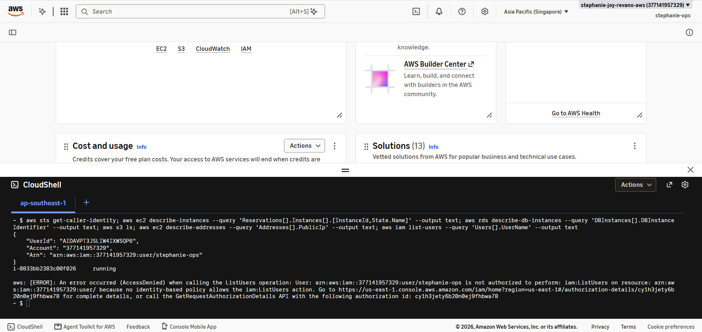
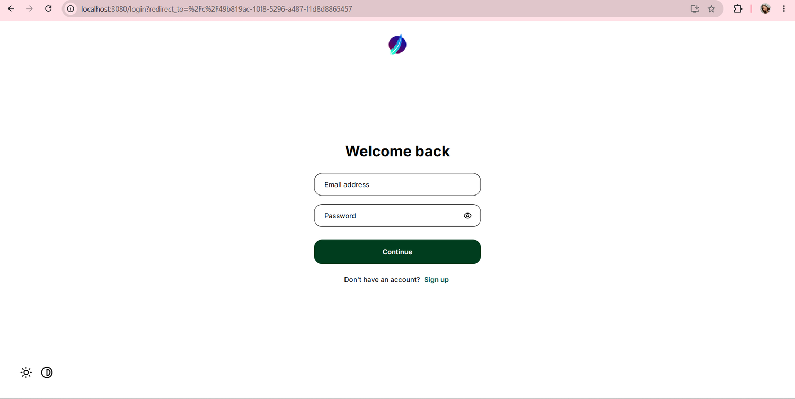

Measured on 2026-11-26 before any deployment. Two things existed: an AWS account with one running server that belongs to another course project (not mine, untouched, excluded from every automation by tag), and the unmodified LibreChat that I ran on my laptop.
| Area | Baseline |
|---|---|
| AWS inventory (ap-southeast-1) | 1 unrelated EC2 instance; no RDS; no S3 buckets; no Elastic IPs |
| Account set-up | Root login with MFA; no IAM user for daily work; one zero-spend budget left over from another project (I added the SAM10 budget on day one); free-plan credits USD 117.40 |
| The AI system | Original LibreChat on a laptop, original name and logo, no resort knowledge: 9/30 test questions correct; asked "What time is check-in?" it answers generically ("usually 3:00 PM") |
| Monitoring and alerts | None |
| Backups | None |
| Secrets | Model key and app secrets in a local .env file |
| Audit trail | No CloudTrail trail for this project |
| Automation, runbooks | None |







Generic-model results on the 30 questions: evidence file.